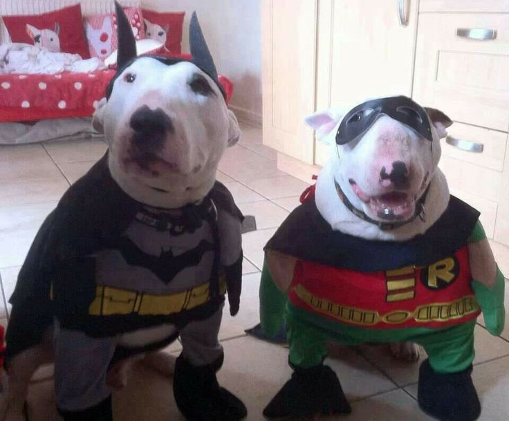
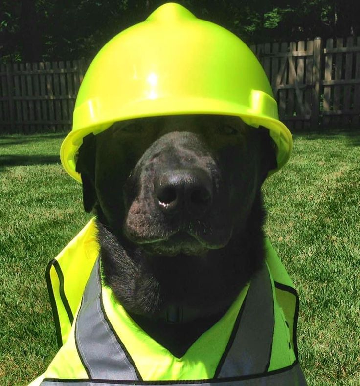
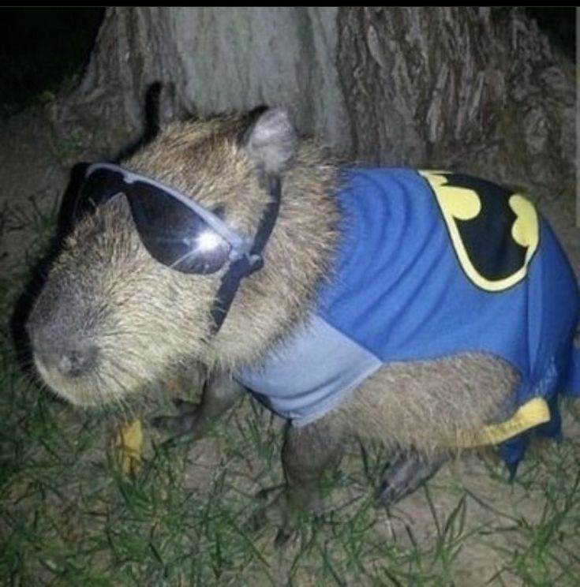

Uma Jornada!
Você e seu amigo cão Robbin, estavam a procura do seu parceiro Batman capivara, mas não tinham ideia aonde ele poderia estar. Então decidiram sair por ai a procura dele.
"Escolha uma direção:
Você e seu amigo viraram a Direita, e encontrou o Maskeico da quebrada!
Maskeico disse a vocês que para encontrar o Batman capivara, precisariam ir para a esquerda e falar com o cão trabalhador.
Você e seu amigo viraram a Esquerda, e encontrou o Cão Trabalhador!
O cão trabalhador disse a vocês que havia visto o Batamn capivara entre a Lagoa ou na Estrada, porém que não se recorda.
Escolha um lugar:
Você e seu amigo viraram a Esquerda, e encontrou o Cão Trabalhador!
O cão trabalhador disse a vocês que havia visto o Batamn capivara entre a Lagoa ou na Estrada, porém que não se recorda.
Escolha um lugar:
VOCÊ FALHOU!
O banquete era falso e só mostrou não ser um amigo digno.
> Você perdeu a amizade com Robbin.
> Não foi capaz de encontrar o Batman Capivara.
Final feliz!
Vocês foram até a lagoa, e parabéns!
>Foram capazes de encontrar o Batman capivara!
Não fizeram mais que sua obrigação! >:(
Vocês foram até a estrada, porém não encontraram nada por ali.
Caminharam até a lagoa
Final feliz!
Vocês foram até a lagoa, e parabéns!
>Foram capazes de encontrar o Batman capivara!
Não fizeram mais que sua obrigação! >:(